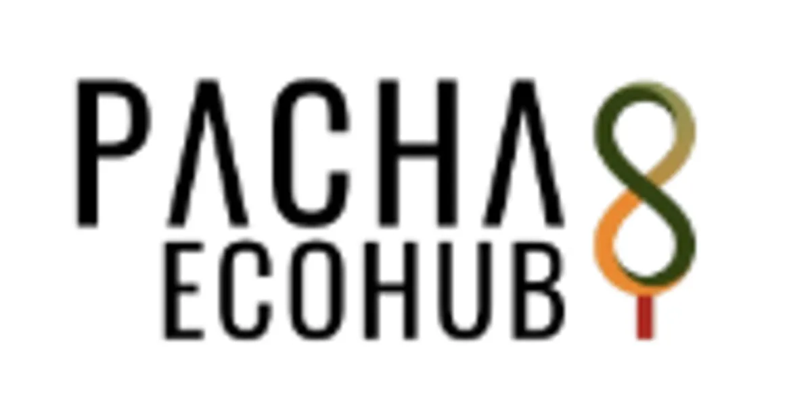

Micro-agentes de IA para tareas críticas
Para cualquier tarea repetitiva de tu operación que hoy hacés a mano.
Agentes de IA livianos conectados a las herramientas que ya usás (Sheets, Gmail, WhatsApp, tu ERP).
Cotizar micro-agentes por WhatsAppIngeniería sostenible · IA ligera · Latam
Procesado 100% por IA · Sin compromiso · Recibís el informe diagnóstico en tu correo.
Sobre mí
Ingeniera de software hace 12 años. Me especializo en lo que las consultoras tradicionales evitan: hacer que tu infraestructura técnica sea más liviana, más barata y más rápida — sin pausar tu operación.
Cada servicio lo puedes contratar por separado. Si encajamos, trabajamos por hitos cortos con pagos por hito y cero ataduras: al terminar, todo es tuyo.
Para cualquier tarea repetitiva de tu operación que hoy hacés a mano.
Agentes de IA livianos conectados a las herramientas que ya usás (Sheets, Gmail, WhatsApp, tu ERP).
Cotizar micro-agentes por WhatsAppPara sitios WordPress o frameworks pesados que gastan más recursos de los necesarios.
Migramos tu sitio a una arquitectura web rápida, segura y económica. Menos servidor, menos superficie de ataque.
Cotizar desintoxicación por WhatsAppPara equipos tomando decisiones técnicas a ciegas: qué construir, qué comprar, qué ignorar.
Ordenamos el roadmap, priorizamos deuda técnica y ubicamos dónde la IA es mas efectiva para ti y te ahorra dinero.
Consultar por WhatsAppSistemas pequeños, decisiones técnicas, resultados medibles.
De tu primer correo a tu sistema operando. Seis fases, pagos por hito, cero ataduras al terminar.
Un sitio auditado de punta a punta. Datos públicos, decisiones reales.
Sitio institucional para Gaia Consultores · Empresa B Certificada
Empresa B Certificada sin web donde aterrizar su mensaje de impacto. Necesitaban comunicar lo que hacen a clientes y aliados sin traicionar el mensaje de sostenibilidad.
Delphy Barcelona · Consultora de Circularidad · Pacha EcoHub
la capa técnica coherente con el mensaje de sostenibilidad: sin frameworks, sin JavaScript en el cliente, hosting verde GreenGeeks.
Auditoría del sitio publicado
Fuentes: Website Carbon · PageSpeed Insights · Lighthouse
Para empresas B Certificadas o en transición a B, el mensaje de sostenibilidad no puede quedarse solo en la certificación.

Delphy Barcelona Consultora de Circularidad · Pacha EcoHub
Trabajo con Delphy como aliada estratégica: ella define el mensaje y el tono de sostenibilidad, yo construyo la web para que aterrice sin traicionar la estrategia.
¿Tu empresa es B o quiere serlo y necesita comunicar su impacto sin que se note el esfuerzo? Conversemos.
Una llamada breve, un mapa claro de tu situación, y la decisión queda en tus manos.
Sin compromiso Respuesta en 24 h Español · English
// Diagnóstico Express
Contesta 6 preguntas. Recibirás un mapa de optimización por correo.